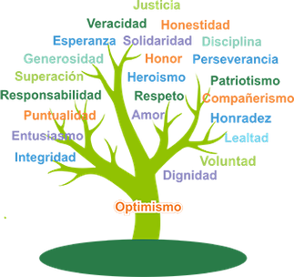

Lo primero que debemos hacer para trabajar con Scrum es crear los equipos. Para ello podemos utilizar distintas herramientas.
Reflexión
¿Qué método emplearías y por qué?¿Crees que por sorteo es un buen método?
Actividad
Crear los equipos con el método que prefiráis.
Lo primero que necesitamos para llevar Scrum al aula, son los tableros. Cada equipo de alumnos/as debe tener un tablero visible a todo el equipo, donde se refleje el estado de las tareas en tarjetas o post-its que se se mueven de una columna a otra, según el estado de la tarea. Los estados habituales son: Por hacer, En proceso, Hecho. Pero se recomienda añadir los que se consideren necesarios, por ejemplo, en validación, puesto en común, etc.
Podremos tener además en el tablero los siguientes elementos:
"Reflexión"
¿Cómo podemos indicar toda esta información en un tablero, y que sea fácil de leer el estado del proyecto?¿Qué información realmente necesitamos en nuestro proyecto?
Propuesta
Una propuesta de tablero es poner con colores quién está asignado a cada tarea. Poner la estimación siempre en el mismo lugar en la tarjeta, por ejemplo, la esquina inferior izquierda. Se puede poner el tiempo real en la otra esquina.
Para ver claramente cada requerimiento, poner cada uno en una fila, de manera que viendo las tarjetas de cada fila vemos el avance de ese requerimiento.
Otra idea puede ser poner una primera fila con atascos/retrasos, de manera que si es tablero digital sea la primera en ver. Si resolver ese retraso o atasco depende de otra persona, ponemos la tarjeta con el color de esa persona, por ejemplo, del color del Product Owner o del Scrum Master.
Si hay tareas que tengan dependencias de otras, o requerimientos que dependan de otros, es mejor poner las que haya que hacer antes arriba.
En el caso de que estuvieran trabajando con múltiples proyectos, al tenerlo separado por requerimientos, siempre y cuando hayamos definido el mismo tiempo de Sprint y acordado con otros docentes usar las mismas normas, se podría tener el mismo tablero para múltiples proyectos.
Este tablero puede ser digital o físico, o ambos.
Tablero físico
El tablero físico es un tablero, donde se colocan tarjetas (post-its) con las tareas a realizar.
La idea es ir moviendo post-its de una columna a otra, según el estado de la tarea. Por lo tanto, debe ser una superficie en la que los post-its se puedan pegar y despegar con facilidad.
En el caso de tener tableros de corcho en el aula, o no tener un aula fija para poder colgar tableros, podemos realizar unos tableros caseros que sean plegables, o que se puedan colgar en el aula con facilidad, y permitan el uso de post-its.
Tablero digital
Existen diferentes herramientas para llevar un tablero digital. Algunas de las más conocidas son Trello, Jira, Asana, Miro, Padlet, etc.
Os invito a estudiarlas y a elegir la que mejor se adapte a vuestras necesidades.
En el ámbito empresarial se usa bastante Jira, AppDevops, Trello, etc. Pero quizás en el aula Trello sea más sencillo de usar, aunque tiene el inconveniente de que no permite poner la altura de la tarjeta.
A parte de poder realizar dinámicas para que los equipos se conozcan y se cree un buen ambiente en el aula, en el tablero podemos ayudarnos con algunos elementos.
Se debe poner en el tablero el nombre del equipo, un logo, y los nombres o avatares de sus integrantes. Cualquier cosa que potencie la permanencia y compromiso con ese equipo.
Definición de Divertido
La diversión es un factor importante para el alumnado y, por lo tanto, es una condición previa para un mejor rendimiento del aprendizaje. Pensemos en "reír juntos", "trabajar bien", "dar y recibir confianza", "dar retroalimentación positiva", "escuchar música suave y divertida", "traer algo de comer". Por lo tanto, el alumnado también deben indicar qué es lo que necesita para divertirse mientras hacen lo que hacen. La necesidad puede entenderse mejor aquí en el sentido amplio de la palabra, lo que debe estar ahí para que funcione agradablemente. A menudo, el resultado de una retrospectiva proporciona puntos de partida para la "Definición de Diversión". Esta lista también es un "documento vivo" y se puede complementar o cambiar con frecuencia.
Árbol de valores
También se consigue mejorar el ambiente en el aula a través de los árboles de valores, desarrollados por ellos. Si el profesorado impone ciertas normas, no se cumplen de la misma forma que si es el equipo el que las ha decidido. Se debe poner los valores más importantes en la raíz e ir subiendo hacia la copa. No recomiendo poner más de 5. Es mejor pocos, pero muy claros.
De esta forma, si por ejemplo has puesto compromiso en la raíz, y algún miembro del equipo no parece que esté comprometido, el equipo puede recordar que esos fueron los acuerdos a los que llegaron.
Ya hemos hablado anteriormente del Product Backlog, pero vamos a entrar en profundidad en los diferentes puntos que debemos tener en cuenta.
Cada historia de usuario o requerimiento debe ir acompañado de sus criterios de aceptación. Los criterios de aceptación son una lista de condiciones que se deben cumplir para que la historia de usuario se considere terminada. Los criterios de aceptación se utilizan para asegurarse de que el equipo entiende lo que se espera de ellos.
Por ejemplo, esta historia de usuario:
"Como usuario, quiero poder iniciar sesión en la aplicación para acceder a mi perfil"
Podría tener los siguientes criterios de aceptación:
No hay que confundir los criterios de aceptación de cada tareas, con la Definición de Hecho ("Definition of Done") que se verá más adelante. La definición de hecho es la misma para todas las historias o requerimientos, y los criterios de aceptación son específicos de cada tarea.
"Reflexión"
¿En que momento desglosamos los requerimientos en tareas más pequeñas?¿Lo realiza el profesorado o el alumnado?¿Estimamos tareas o requerimientos?
No hay una forma única de trabajar en este marco de trabajo, por lo que la recomendación es sencilla: usar el sentido común y adaptarse lo máximo posible al grupo y al entorno. ¿Es un grupo con poca autonomía o el el primer Sprint que realizan? Podemos facilitarles las tareas, o parte de ellas. Si es un grupo con autonomía y que conoce ya el marco Scrum, pueden extraer ellos las tareas.
Muchas veces nos puede servir coger una tarea por cada criterio de aceptación que hayamos definido.
En el ejemplo anterior, esta historia de usuario: "Como usuario, quiero poder iniciar sesión en la aplicación para acceder a mi perfil" podríamos tener las siguientes tareas:
"Reflexión"
¿Cuántas veces os ha pasado a nivel profesional o personal que os han dicho que se había hecho algo y no estaba terminado?
La Definición de Terminado es la misma para todas las historias o requerimientos, y los criterios de aceptación son específicos de cada tarea.
Ejemplo de definición de hecho:
Siempre pondremos en la definición de hecho, que se cumplan todos los criterios de aceptación.
Esta definición nos sirve para ver que se debe cumplir para poner una tarea en la columna de Hecho o Done. Una vez ahí la tarea, se entiende que ya no hay que realizar nada más con ella.
Actividad
Realizamos el tablero de cada equipo, incluyendo en el Product Backlog todo lo que nos aporte información o nos resulte de utilidad. Se deben definir las columnas de estados y subestados que necesitemos. Es importante poner aquello que potencia la pertenencia al equipo, y mejora la convivencia y el compromiso.
Planning Poker es una técnica que se utiliza para realizar estimaciones de esfuerzo.
Lo primero que debemos definir es en que vamos a medir. Sin una unidad de medida de referencia no sobremos de qué estamos hablando. Si decimos que el coste o esfuerzo de una tarea es de 100, ¿estamos hablando de horas, de segundos, de euros?
Si se trata de una distancia de 50, ¿de millas, de km?
Escogemos una tarea del tablero que usaremos cómo unidad de medida, y a esta la conocemos con pivote. Se puede coger la tarea que consideremos más pequeña y darle el peso de 1, o coger una tarea que conociendo todo el equipo lo que se debe realizar para hacer esa tarea le damos peso a esta la primera, y esa será nuestra referencia.
Para estimar cada tarea, se siguen los siguientes pasos:
Cuando se haya terminado con esa tarea se anota en ella el peso dado por el equipo y se pasa a la siguiente tareas. Así hasta que todas las tareas tengan su peso.
También hay otras formas de estimar, por ejemplo, por tallas: XS,S,M,L,XL. Aunque después tendremos que convertir cualquier otra forma de estimar en puntos de esfuerzo, para poder obtener la suma del esfuerzo final.
"Reflexión"
¿Es mejor estimar todo al inicio del proyecto o en cada reunión de planificación del Sprint?
Hay mucho debate en el mundo de Scrum sobre cómo estimar el esfuerzo y cuándo. Muchas veces los equipos estiman puntos de esfuerzo a través del Planning Poker para cada requerimiento o historia de usuario al principio del proyecto. Luego, puedo o no ser interesante estimar las tareas en horas.
Otras veces, nos cuesta estimar todo al inicio del proyecto, y en ese caso, podemos hacerlo al inicio de cada Sprint.
Conclusión
En esta actividad además de trabajar la comunicación, resolución de conflictos y la toma de decisiones, aprenden a hacer estimaciones y favorece el pensamiento crítico.
Actividad
Realizamos en el aula un ejemplo con todo el grupo de como debemos hacer el Planning Poker, poniendo un ejemplo de tarea.
El burndown chart es una gráfica que muestra el trabajo pendiente, mientras que el burnup chart muestra el trabajo realizado.
Sumamos todos los pesos de todas las actividades que vamos a realizar en ese Sprint.
Realizamos un gráfico poniendo en el eje vertical el total de pesos, y en el eje horizontal el total de sesiones que vamos a tener hasta que deba estar terminado.
Se traza una línea recta entre los dos puntos. Esta línea nos marcará el ritmo de trabajo que debamos llevar para llegar a tiempo a la entrega.
Sobre este gráfico iremos actualizando los puntos realizados cada día. Si nos desviamos de la línea marcada, veremos si hace falta refuerzo o ampliación.
Actividad
Realizamos el burndown
Una vez que empezamos a trabajar día a día, realizaremos la reunión diaria delante del tablero.
Reflexión
¿Cómo debemos leer e interpretar el tablero?¿Qué conclusiones extraéis de los siguientes tableros?
Ejemplo 1
En este tablero podemos ver que hay muchas tareas en una columna en particular. En esta caso nos está avisando que en la tarea de validación se quedan atascadas las tareas. Hay que ver cuál es la causa y buscar soluciones.
Ejemplo 2
En este tablero podemos ver que hay una persona que tiene muchas tareas asignadas, la verde. Si son 4 personas en el equipo, hay 2 que no tienen ninguna tarea.
Ejemplo 3
En este tablero podemos ver que hay muchas tareas en curso, sin terminar. Esto se debe evitar, ya que el hacer muchas cosas a la vez no es productivo. Hay que minimizar el trabajo en curso (WIP: Work in Progres ).
Conclusiones
El tablero debe trabajarse de derecha a izquierda, "tirando" desde la columna Done o Terminado, intentando mover las tarjetas que tiene en la columna previa. Una vez cerradas las tarjetas que estaban en la columna anterior, intentamos pasar a esta las tareas de la columna anterior. Y así sucesivamente.
No se trata de ir quitando columnas del To Do o Por hacer.
Conclusión
El tablero nos muestra donde se encuentra claramente el equipo, y sirve para que el profesorado tenga una visión clara de si el equipo lleva un buen camino para conseguir los resultados de aprendizaje y actuar en consecuencia. El profesorado repasa los tableros y cuando detecta algún problema o el alumnado se encalla en algún concepto difícil aprovecha para hacer la explicación a toda la clase.
Reflexión
¿Qué hacemos si queda poco para la Revisión y tenemos muchas tareas por terminar?